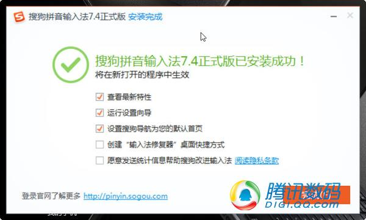
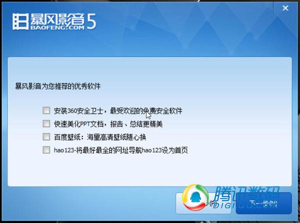
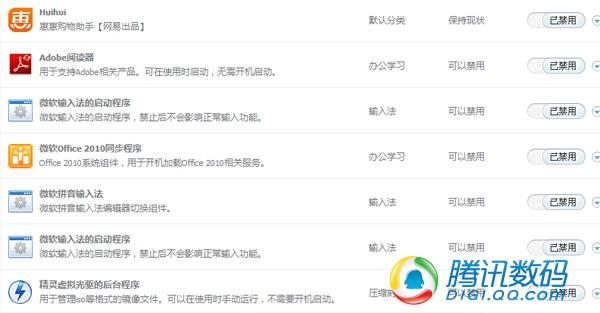

皆さんもこうした経験があるはずだ。あるソフトウェアをダウンロードしてインストールした後、自分の使用習慣が悪意を持って変更されたり、システムの中に訳のわからない奇妙なものが追加されたりする。技術に多少詳しい人なら、問題の原因を探し出し、変更されたホームページやレジストリを修正できるが、あまり詳しくない初心者ユーザーは「技術オタク」に頼るしかない。そして、そのまま放置しておけば、時間が経つにつれてOSの再インストールは確実な運命となる。では、よく使われるソフトウェアは一体どのようにして悪さをするのか。今日はこの話題について話してみよう。
プロンプトあり・なしのバンドルインストールプラグイン
比較的良心のある通知プラグインだが、あるセキュリティソフトはそれがパソコンを遅くすると考えている。
通知なしに、プラグイン、ゲームボックス、およびたまご割りページ広告をインストールさせる
多くの人はソフトウェアパッケージをインストールする際、各ステップのインストール画面をじっくり見ないものです。特に淘宝や韓国ドラマが好きな女性たちは、そんなものを見る気などありません。時間が経つと、パソコンに不要なソフトがたくさんあることに気づきます。それらは自分で積極的にインストールしたものではないのに、いつの間にかパソコンの中に現れています。こうした状況は、十中八九、ソフトウェアにバンドルされたプラグインが「こっそり」インストールされたことが原因です。

通知付きのホームページ改ざん行為。インストール中に少しでも不注意だと改ざんされてしまいます。
某旺旺はUCブラウザー、如意淘、阿里网盘、淘宝手机助手という5つのプラグインとUC123ホームページをバンドルしている。
現在、バンドルインストールは非常に一般的な現象になっています。しかし、職業倫理の観点から、ほとんどのソフトウェア会社が提供する常用ソフトは、バンドルソフトをインストールする際に、インストール手順の中でユーザーに明確にあるいは曖昧に通知します。このようなソフトについては、インストール中に各ステップにそのような通知があるかどうかを注意深く確認し、数学の問題を解くときや履歴書を書くときのように目を大きく見開いて確認すれば、通常はバンドルされたソフトを誤ってインストールすることを避けられます。

ある動画ソフトがバンドルしていた360安全卫士、PPT美化、百度壁纸の3つのプラグインとhao123ホームページナビ。
手動でプラグインのインストールの選択を解除した後も、ある動画ソフトは通知なしで飛屏ソフトをインストールした。
一方、道徳心をまったく顧みず、ユーザーに一切通知せずに勝手にプラグインをインストールするようなソフトウェアに対しては、私たちには本当に良い方法がないかもしれません。それを使わないか、インストールした後で手動でアンインストールすることを覚えておくしかありません。
ブラウザのホームページを改ざん
ブラウザのホームページを改ざんすることは、ソフトウェアが悪さをするもう一つの常套手段だ。ソフトウェアのインストールを通じて、システム内でソフトウェアとは無関係なブラウザ機能やレジストリ情報を呼び出し、これらのパラメータを変更することで、ホームページをソフトウェアと利益関係のあるホームページに変更し、ユーザーのそのホームページへのアクセス数を増やそうとする。hao123や2345网址导航といったホームページは、初期の頃にどのようにして少しずつユーザーのブラウザを占拠していったかを、完全に理解しているに違いない。
ブラウザのホームページ改ざんには、実際には浅い改ざんと深い改ざんがある。一般的な浅い改ざんは、ユーザーが手動でブラウザのホームページ設定を変更し、レジストリの関連キー値を調整することで元に戻せる。しかし、一部のケースでは改ざんがより深く、呼び出されるシステム機能も多いため、システムに精通しているユーザーでも、ブラウザの設定やレジストリを変更してホームページを元に戻すのは困難だ。このような状況は通常、出所不明のインストールパッケージにのみ現れるため、由来不明のソフトウェアインストールパッケージをダウンロードして使用しないことをお勧めする。
秘技：もしすでに被害を受けてしまい、あらゆる方法を試してもブラウザのホームページを元に戻せないなら、ひとつの方法を教えましょう。Win7とWin8には実際には非常に便利な「復元ポイントによる復元」機能が組み込まれています。ユーザーはその機能を有効にし、ソフトウェアをインストールする前の安全なシステム時刻を見つけて復元を一度実行すれば、必ず問題を解決できます。
起動項目を勝手に占拠
常用ソフトの理不尽な行為 第三の型：起動項目を勝手に占有する。身の回りのパソコンユーザーを観察すると、システムメンテナンスを理解している人は、パソコンを30秒台で起動させ続けることができます。SSDがない場合、これは健全な起動速度です。一方、システムメンテナンスにあまり注意を払わない人たちのパソコンは、使えば使うほど起動時間が長くなり、多くの人のパソコンは起動に少なくとも1分以上かかります。これは、ソフトウェアが起動項目を勝手に占有していることが原因である可能性が高いです。

多くの起動項目は、一般ユーザーが起動時に必要としないものです。
あるユーザーのパソコンを例に挙げると、彼のスタートアップ項目には、本来は起動時に自動的に起動する多くの項目が人為的に無効化されていた。その中には、よく見かけるMicrosoft IME、Adobe Reader、仮想ドライブのバックグラウンドプログラムが含まれる。ほとんどのユーザーにとって、これらはシステムの起動と同時に起動する必要はなく、使用するときに呼び出せば十分だ。したがって、これらを無効化することで、起動時間を効果的に短縮できる。自分のパソコンのスタートアップ項目を確認し、起動時に実行する必要のないソフトウェアを考えて、気持ちよく無効化してしまおう！
既定の開き方を変更
いわゆる「一山に二虎を容れず」というが、一台のパソコンに同じ種類のソフトウェアが同時に2つインストールされたら、結果はどうなるだろうか？それは、後からインストールされたプログラムが必ず自分自身のために存在機会と価値を多く勝ち取ろうとするということだ。具体的には、ブラウザはユーザーに自分をデフォルトブラウザに変更するよう促し、プレーヤーはユーザーに自分をデフォルトのメディア再生方法に変更するよう促す。このようなやり取りが続くと、ユーザーにどのような問題がもたらされるのか？ユーザーが今日クリックしたリンクを開くのはブラウザA、明日はブラウザBかもしれない。今日音楽を開くのはOO音楽、明日はロブスター音楽、明後日は芊芊静聴になるかもしれない。デフォルトの設定が次々と変更され、ユーザーに使用上の不便をもたらし、システムに混乱をもたらす。
建议：
1.「一夫一婦」、固定のパートナー。
2、一部のソフトウェアは、起動するたびに自分自身をデフォルトの開き方として再確立します。例えば「K我音楽」です。このような非常に強硬な理不尽な行為に直面した場合、それをアンインストールするか、他のソフトウェアを非デフォルトに設定するか、あるいはアンインストールするかを選ぶしかないでしょう。
防ぎようのない広告ポップアップ
暴风影音の広告ポップアップ
昨年の315（消費者権益デー）で暴露された、ネットワーク事業者が地域ごとにWebページ上で広告ポップアップを配信する悪行のほかにも、実はソフトウェアに広告ポップアップが含まれているかどうかは、多くの場合、ソフトウェアの収益モデルに依存している。一部のソフトウェアメーカーは金儲けのために手段を選ばず、デスクトップに純粋な広告ポップアップを強制的に配信しており、一般ユーザーは受動的に広告の観客にさせられ、コンピューターシステムの調和と美観を損なっている。
広告配信機能を持つほとんどのソフトウェアは、ユーザーが広告配信を拒否する設定に対応しており、ユーザーはこの種のソフトウェアの設定内で関連する無効化機能を見つけることができる。しかし、ソフトウェアがこのようなブロックオプションを提供していない場合、ネット上にはいくつかのターゲットを絞った広告ブロックのテクニックがあるものの、この問題を完全に根絶できるテクニックは一つもない。これらの広告にうんざりしているなら、答えはおそらくアンインストールしかないかもしれない。しかし、アンインストールすればすべてがうまくいき、もうイライラすることもないのだろうか？必ずしもそうとは限らない。
意図的なアンインストール妨害
ユーザーにソフトをアンインストールさせず、繋ぎ止めるために、ソフトウェアベンダーはあらゆる手段を考え出しました。最も典型的なのは、ユーザーがソフトをアンインストールする過程で妨害することです。インストール時と同じようにスムーズにアンインストールできると思いますか？ そんなの無理ですよ！
複数のオプションの判断と何度もウィンドウを遷移させて初めてアンインストールできる。
「もう一度ゴミを掃除してみない？」「お客さん、アンインストールするとパソコンが私たちの保護を受けられなくなりますよ」「私たちのソフトを使わないと、システムが遅くなりますよ！」「強制的にインストールされた携帯アシスタントが気に入らないですか？ それなら先にそれをアンインストールしてから、もう一度感じてみませんか？」ソフトがこんなにもあれこれ妨害して去ろうとしないのを見るたびに、思わず悪口を言いたくなる人は手を挙げてください。
总结：
実はインターネット時代には、不可能なことなど何もありません。どんなソフトウェア製品にも競争が存在します。商業利益のためにユーザーの気持ちを顧みないやり方は、短期的な効果をもたらすかもしれません。しかし長期的に見れば、それはユーザー体験の向上やユーザーのロイヤリティ向上にはつながりません。あなたのソフトがユーザーに良い体験を提供できず、ちょうどそのときに別の類似ソフトが優れた体験を提供していたなら、その競合が急速に市場を攻略し、市場を奪う可能性が高いです。もし私の言ったことがまだ現実になっていないなら、ベンダーとして幸運だと思うべきです。競合がまだ十分に強くなく、市場をひっくり返すまでに至っていないことを、そしてユーザーがまだ黙って我慢して、あなたを見捨てずにいることを、幸運に思うべきです。
原文出处：http://www.techug.com/software-cheater
クリックしてノートを共有
笔记需要是本篇文章的内容扩展！
文章投稿，可点击这里
注册邀请码获取方式
分享笔记前必须登录！
注册邀请码获取方式